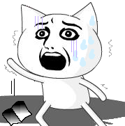

{kind=link}
{kind=link}


いや、俺は魚は好きですよ。
でもね
通勤ラッシュの時間に鮮魚を運ぶなおっちゃん。頼むから○|￣|＿
くせーんだよ。
俺の隣の席に思いっきり飛び込んできたお前達。
ずーっとランチタイムのテンションで喋りまくってるけど何がそんなに面白いのだ。
どこでウケてるのかわかんねーし。ってゆーかそれ明らかに愛想笑いだろ。
聞いててきもちわりーんだよヽ(`д´)ﾉ
いや、腹減ったのはわかるけどハンバーガーなんて食うな！
油くせーんだよ、ボケが。
なあ、そこ一人分のスペース無いから。
っつーかおばちゃん、貴女1.5人分の幅あるから。
おっちゃんおっちゃん！網棚の紙袋忘れてるよ！
うわあ！(;д) ﾟ ﾟ
にーちゃん、つり革を3つも使うなよこの欲張りが。あー…ほら。隣の人こけちゃったよ、、、
いてえ！足踏むなよ！
イビキかいて寝るなー！うるせええ！！
ちょ、おま、朝っぱらからエロ本読むなああああｓｄｆｌｇふｌ(脳波が途切れました
…色々な人がいますね('`;)
深夜に時々、目的も無くバイクでどっかに出かけたりします。
それも山の中に向かって。
俺のバイクはTTR250、オフローダーです。だから山道とも相性いいんですよね。
ライトでかいから明るいし。
で、まじで星の明かりしか無い様な道をかっ飛ばすんです。
何か自分の中の凶暴なものをむき出しにする感じでね。
しばらく走ってると滅茶苦茶寒くなって、自販でコーヒーとか買って飲んで、タバコなんか吸っちゃって。
そして真っ白な息を吐いたときにふと空を見上げると、ゾッとする程の満天の星空だったりするんです。
月の無い夜とかは特に。
で、なんとなくぼーっと寝転がって見てたら、なんか背中の感覚が無くなってきて空を漂ってるみたいな感じになってきます。
んー、宙に浮かんでる感じかな？
くさい言い方をすれば宇宙の一部に触れてるー…みたいな。
そしたら、なんかもーどーにもなんねーぐらい広い世界を知ってしまって
悩み？とかストレスとかどーでもよくなっちゃって
いつの間にかその凶暴な奴もいなくなってて
腹なんか減っちゃって
眠たくなっちゃって。
「でっかいなぁ…俺とかちっこいなぁ…」
…
んーーーーーー〜〜〜……っん！(伸び
今夜ぐっすり寝たら、明日からガンバロー。
おやすみー(つw`) ってねｗ
えーっと、わたくしTEVAは現在大学四回生です。
四回生。22歳。つまりいい大人ですな。
で、そのいい大人が普段何してるかってーとメイポです。
メイポは楽しいですね。
レベルを上げる為に狩りをする時は色々な人達と一緒にするのでチャットが楽しいのなんのって！
そしてレベルが上がると新しいスキルを覚えて目に見えて強くなっていく。
狩りに疲れてもチャットが楽しい。
ひーゃっほう(何
メイポを始めてはや一年半、なのにいまだに新しい出会いがある。
ありえないほど貧乏な俺だけどゲームそのものはまだ続けられるって事ですからね。
やめられない理由はこんなもんでしょうか。
あーもう一個あるか。
INしない日が続くと皆とチャットとかしたくなっちゃって我慢が出来ない。
これが一番大きいですね。
だけど弊害として、メイポは何言ったってゲームですからね。
相応の時間は割いてるわけです。
20台前半の貴重な青春を浪費する、そして睡眠時間の激減。
それによって授業やアルバイトに遅刻するなど社会的信頼の低減。
これはいったいですねー、痛すぎます。
そして遅刻した朝に思うわけですよ、
「あー、、、俺何やってんだろ、、、」って。
後悔、超後悔。
更に、ふと手帳を開くと卒業論文の提出期限まであと、、、21日。 (;д) ﾟ ﾟ
うわあああああああああああああ
っとまあこんな気分。
つまりこんなことしてる場合じゃなかったんですね。
何が何でも12月5日の締め切りまでに完成させなければ四年間が無駄になるわけです('`)
留年なんてもー社会的信頼とかゆーレベルじゃないですよ、ええ。
っつーわけで、一月の間メイポ断ちします。
楽しい事としんどい事は両立出来ないって事が今頃わかっちゃったので。
…これが、ギリギリになってしか理解出来ない適当な脳みそを持ったTEVAの今更導き出した答えです。
それでは皆の衆お元気で。さらばーーヽ(ﾟ▽ﾟ)ﾉｼ
追伸。
俺の普段の行動を監視してもらう為(迷惑 日記だけはほぼ毎日つける、と宣言しておきまーふ(´σд`)
ｵﾜﾙ
寝すぎです。いくらなんでも寝すぎです。
そのうち俺を苗床にキノコでも生えるんじゃなかろーか。
冬虫夏草。
じゃあ今の俺、虫か。
しまった、、、十二時さんのぐるぐる鼻眼鏡＋ゲロ顔(+ハートの目)のSS撮るの忘れてた、、、。
ちっくしょう、貴重なショットだったのに ○|￣|＿
誰かBBSに投稿してください（ぇ
Debian GNU/Linux3.1 sarge. クールですよ。
パッケージのアップデートも
#apt-get update
#apt-get upgrade
Debian、Coolですよ。
Mozillaってのが標準ブラウザになってるんだけど、Opera使いたいなーって思ったら
/etc/apt/soruces.listに
deb http://deb.opera.com/opera sarge non-free を追記して
#apt-get update
#apt-get install opera
これで完了。
わぁお、超クーーール
Microsoftさん、少しは見習へ。
さっきからWindowsUpdateが0%から進まないよ。
現在卒業論文の構想考えています。締め切りは12月5日。
多分間に合いません（ぇー
まあ、だらだらと徹夜してるわけですがいい加減腹が減ったので台所に降りてご飯を探しました。
母さんは今朝早くに出て行ったので自分で作ろうと、ご飯をチン。
で、ハムを見つけたんですが、ハムを片手に
「うぅむ、、、焼くべきか生で食うか、、、」
ってゆー謎の葛藤が。
「めんどくさいなぁ、でも生だとおかずにならないしなぁ、、、うぅむ、、、」
…けだるい朝。
もはや病気です。病的などんくさいちゃん。
いや、末期か？だとしたら発症はいつだ？いや、まずそーゆー意味じゃねーし。
あぁぁー、ごはん冷めた。
孫の手が大好きです。
なんでかってーと、かゆいところに手が届くから。
掻きたいところをすぐに掻くことが出来るから。
やりたい事がやりたいように出来る事の快感ってゆーのかな。
どんな事にも当てはまります。
と、まあこんな感じでしょうか。
ノリで紹介したこれらのツールや書籍は、ほんとに痒いところに手が届きます。
快感で失禁しちゃうかもしれまｓ
まあ置いといて。
メイポの中での俺の職業はナイトです。
なぜって斧が好きだから。
現在元気に活動中のTEVAは、なんとファーストキャラなんです。
1年半前ぐらいにメイポを始めたころからずっと使っているキャラで、LUK15あります（ぁ
基本的に根性の無い俺はキャラの作り直しとか出来るはずもなく、ゆーっくりとレベルをあげてきて現在に至ります。
ところがこいつが痒いところに手が届かない。
ムラのあるスキル振りの為に決定的な攻撃力を持たず
ブレイブはJたこを消してしまうので迷惑。
唯一のPTスキルであるブレイブを否定されたがゆえにPTに必要とされない存在。
それがTEVAです。
このペースだとレベル100になる頃にやっとこさコマとパニックがMAXになります。
それぐらいになると一人でどんな強敵でも薙倒して行けるようになるのかもしれませんがっがが
いや、大器晩成型すぎだろ
後半はよくても経過はひたすら我慢。
うぅむ。
TEVAが孫の手になる日は来るのでしょうか(何
今日から俺は方向音痴と自負します。
行ってきました京の都。特にめぼしい目標も立てずに。地図も持たずに。
奈良市を通り抜けてまっすぐ京都市内を目指します。
個人的に京都駅を見ないと京都に来た感じがしない子なので当面の目標はそこです。
うん、ありえない渋滞。お前ら今日は平日だぞ、ノーマイカーデーだぞ(何
他に道無いんかねぇ。すり抜けの出来るバイクだからまだましだけど、車でなんか行く気にもなれないですね。
だってありえない。
ローカルな話になるのですが、私の家から京都に行こうと思ったら
桜井市→三輪→天理市→奈良市→京都
と、辿る事になります。
しかしこの日、天理市から京都までずーっと渋滞。
何キロ続いてるんだよ、馬鹿じゃねーの。
京都駅を中心に走り回ってノリで探し当てた(何 銀閣寺と金閣寺を訪れ、銀閣寺の意外な小汚さに笑いを覚え、祇園で大弓を体験して的に当てた数でさちょに負け、適当にご飯食べたところで夕方6時。(リンクをクリックで画像を表示します。)
まあいいタイミングだし寒くなるからそろそろ帰ろうか、とまた適当に走り出しました。
さちょの家は大阪外環状線沿いにあるので171号線を目指します。
京都→高槻→外環状線→さちょ家、みたいな。
もうひたすら171号線。なにがなんでも171号線。
「おいおい、こんなに絶好調でいいのかよ(ノ∀`)もうおうち着いちゃうぜベイベー」みたいな。
…
はい、なんか様子がおかしくなってきました。
標識が神戸に行くか伊丹に行くかしか無くなってきました。
ええ、ここはどこ私は誰？
コンビニで現在地から辿ってきたルートを調べてみると、、、
外環状線は170号線でした。
ちょｗおまｗｗさむｗｗｗさむぅｗｗｗｗ
明日はさちょとバイクで京都に行く予定です。
さちょと会うのも久しぶりだなぁと
感慨に耽りつつ
楽しみにしつつ
やらなきゃいけない事がいっぱいあるのを思い出して背筋が冷たくなったり。
*過去ログが激しく文字化けを起こした場合は、お手数ですがF5を押してページ更新を行ってください。改善の可能性があります。
なぜそんな事が起こるのかというと、昔作成したきったないソースが原因なのです＿|￣|○
手直しの手間を考えると、読者様にF5を押してもらった方がらくちんだなーっｔ( ´∀`)つ)´▽`)･;'.､ｸﾞﾊ
こんにちは。手羽サイト復活です。
今回はソースにこだわって作ってみました。
出来るだけ見やすく、、、
二日目。下に下げてどうする、と気づいた深夜一時。